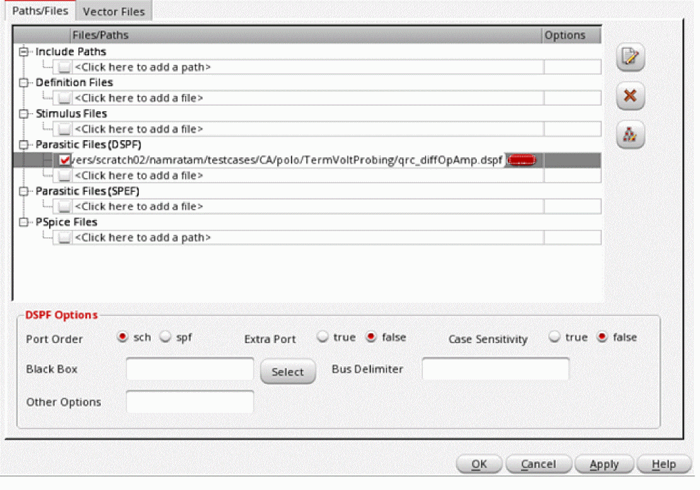
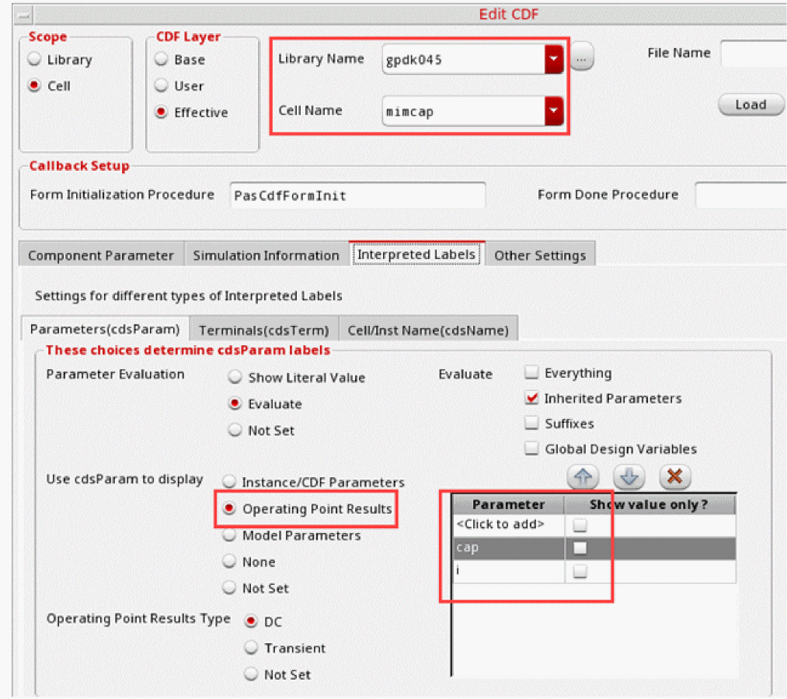
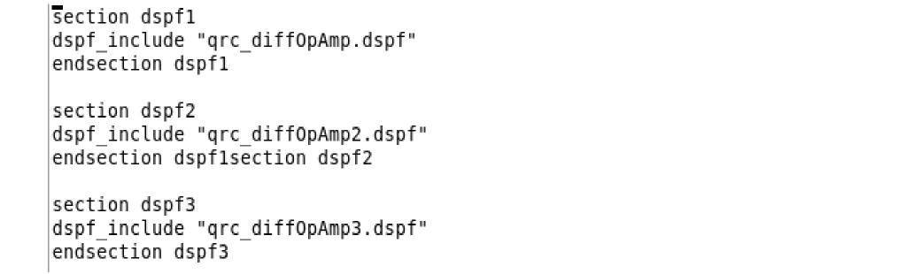
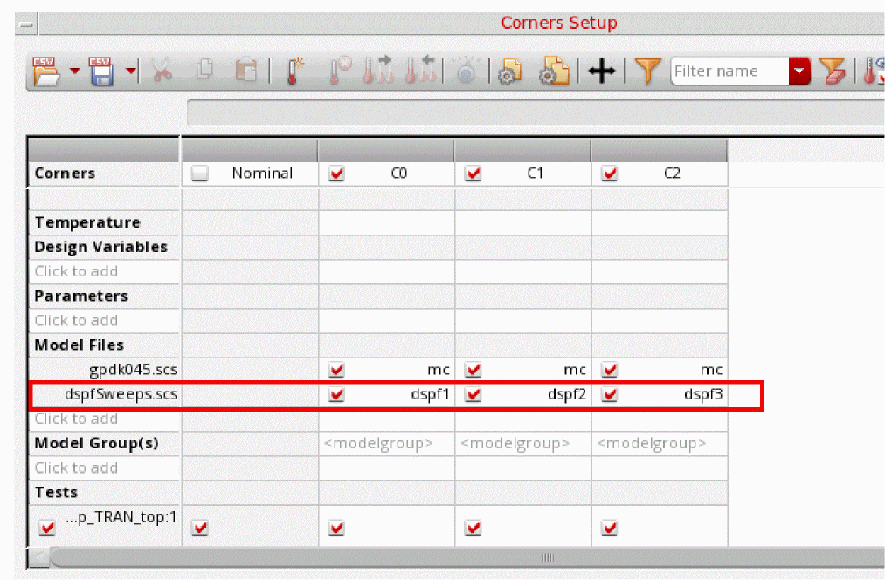
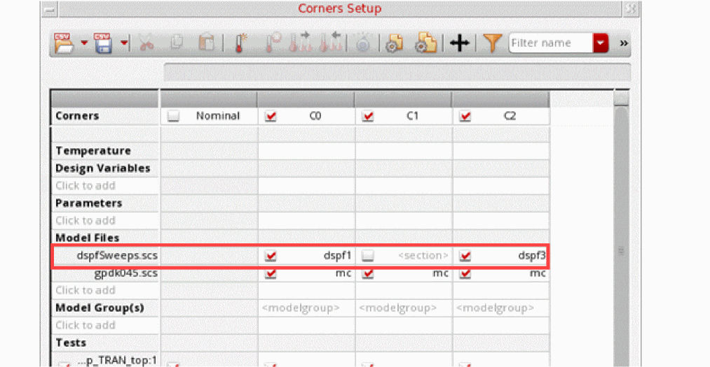
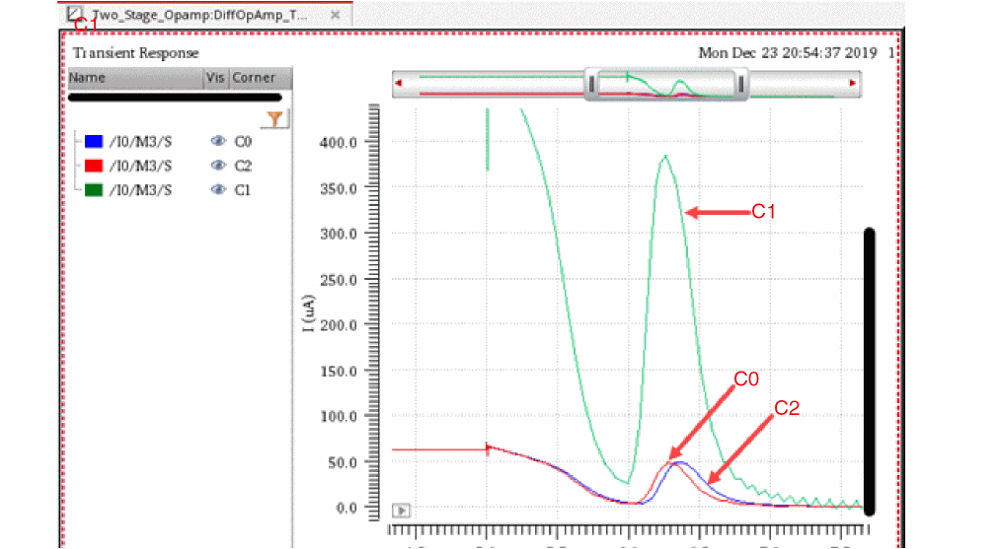
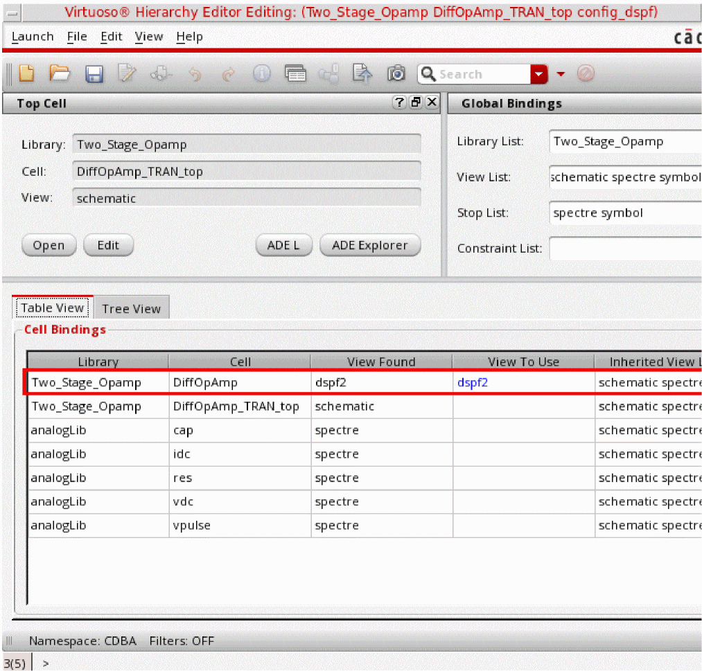

8
Working with DSPF Files
The Detailed Standard Parasitic Format files (DSPF files) contain the post-layout data, which includes the designed and parasitic devices in a design. These files are created using the parasitic extraction tools. Therefore, the content and format of each DSPF file is dependent on the extraction tool. To run simulations for designs containing devices represented by DSPF files, ADE Assembler needs to consider these components in a way different than the devices with schematic.
The following sections explain how you can use DSPF files while running simulations in ADE Assembler:
- Including DSPF Files in the Setup
- Customizing Netlist Creation Using the Options in .simrc
- Customizing Netlist Creation Using Environment Variable
Including DSPF Files in the Setup
You can include DSPF files in the ADE Assembler setup in the following ways:
- Specifying DSPF Files in the Simulation Files Setup Form
- Sweeping DSPF Files in the Corners Setup Form
Specifying DSPF Files in the Simulation Files Setup Form
To specify a DSPF file for a test, perform the following steps:
-
In the Data View assistant, right-click a test and choose Simulation Files.
The Simulation Files Setup form is displayed. -
On the Paths/Files tab of the Simulation Files Setup form, specify the name of the DSPF file in the Parasitic Files (DSPF) field.
A few additional options are displayed in the DSPF Options section on the form.
 -
Specify the additional options to be used for the included DSPF file.
- Port Order: Specifies whether to take the port order of the subcircuit definition from the pre-layout schematic netlist or from the DSPF file subcircuit definition.
- Extra Port: Specifies how to handle extra ports in the DSPF or schematic subcircuit definition. By default, this option is set to false, which implies that the port number in the schematic and the DSPF file needs to be the same. If not, the simulation will stop. When you set this option to true, the extra ports in the DSPF subcircuit call are changed to internal nodes. In addition, the extra ports in the schematic subcircuit definition are connected to nodes with the same name in the DSPF netlist, otherwise, they will be floating.
-
Case Sensitivity: By default, the DSPF file is considered case insensitive. To make the DSPF file case-sensitive, set this option to
true. - Black Box: Specifies the instances to be considered as blackboxes. For the blackbox subcircuit instances, Spectre takes the port order from the DSPF subcircuit definition, and the content from the schematic (blackbox) subcircuit definition
-
Bus delimiter: Enables you to map the bus delimiter between the schematic and DSPF or SPEF files. This option defines the bus delimiter in the schematic netlist, and optionally the bus delimiter in the DSPF file. By default, the bus delimiter of the DSPF file is automatically taken from the DSPF file header (that is,
*|BUSBIT [ ]or*|BUS_DELIMITER [ ]). If the bus delimiter is not defined in the parasitic file header, you need to specify it in thedspf_include bus_delimstatement. If both are specified, then the parasitic file bus delimiter is taken from thedspf_include bus_delim. This option specifies the value fordspf_include bus_delim. -
Other Options: Any
dspf_includeoption other than those available on this form.
-
Click OK to save and close the form.
ADE Assembler uses the DSPF file for the subcircuit defined in it.
Annotating DSPF Results for DC node Voltage and DC Operating Points
When you specify DSPF files in your simulation setup, you must manually add the cap parameter in the CDF Editor to view the DC node voltage and DC Operating points annotation for all devices.
To add the cap parameter in the CDF Editor:
-
In the CIW, choose Tools – CDF – Edit.
The Edit CDF form appears. -
On the Edit CDF form:
- In the Library Name field, select the library whose CDF you want to edit.
-
In the Cell Name list, select
mimcap. - Click the Interpreted Labels tab.
- On the Interpreted Labels tab, click the Parameters(cdsParam) tab.
-
On the Parameters(cdsParam) tab, select Operating Point Results from the Use cdsParam to display group of options.
This enables the Parameters list box.
-
In the Parameter column, add
cap. - Click OK.
To view the annotation for DC node voltage and DC Operating Points results in the schematic:
- On the Results tab of the Outputs pane, right-click a data point and choose Annotate.
-
In the sub-menu that appears, select DC Node Voltages and DC Operating Points.
Assembler annotates your design schematic with the DC node voltage values and DC operating point data.
Sweeping DSPF Files in the Corners Setup Form
If you have multiple DSPF files that you can use for a particular device, and you want to use one file at a time, you can sweep the files using the Corners Setup form.
-
Create a model file that a separate section for the each DSPF file to be swept.
The following code shows a sample content of a model file:
 -
In the Corners Setup form, include the model file and select a unique section for each corner.
ADE Assembler uses the DSPF file for the subcircuit defined in it.
If required, you can use the schematic view for selected corners and a DSPF file for the remaining. For example, in the following corners setup, cornerC1is not using the DSPF file. Therefore, it will use the schematic view. In this case, the output shows the difference in values of cornersC0andC2as compared to cornerC1.
The output shows the difference in values of cornersC0andC2as compared to cornerC1.

Binding a DSPF View to a Design
If you need to replace the schematic of a particular device in your design with the DSPF view, you can bind the cellview to the corresponding DSPF view.
- Create or edit the config view for its parent cellview in Virtuoso Hierarchy Editor.
-
Specify the DSPF view to be used in the View to Use column in the Cell Bindings table.
 -
Save the changes in the Hierarchy Editor.
Customizing Netlist Creation Using the Options in .simrc
The content and format of a DSPF file is heavily dependent on the extraction tool and the settings. Often, simulation problems occur because the syntax used for the nets and terminals in the DSPF file is different from the syntax used in the netlist created by Spectre. For example, the hierarchy delimiter used in a DSPF file is '.' (I0.M9) whereas the delimiter used in the Spectre netlist is '/' (I0/M9).
Similarly, for terminal currents, mapped name of top level devices in the DSPF file can have an extra prefix, such as XX instead of X, which does not exist in the netlist.
If your DSPF files show such differences, you can set options in the .simrc file to update the save statement in the netlist so that the device names match with those in the DSPF file. For this, you need to read the contents of the DSPF file and set the variables in the .simrc file to update the name mapping.
The following table describes the options you can set in the .simrc file:
The following example of the .simrc file shows how you can specify these settings:
dspfFileEnvOptions = '( (nil spfFileNameMappingFormat "cdl" spfFileTermDelimiter ":" spfFileTerminalMapping "lower"
spfDevicePrefixForMimcap "C"
spfFileFingerDelimiter "@"
spfFileDeviceDefaultPrefix "M"
spfFileHierDelimiter "/"
spfFileDevicePrefixForMacroModels "X"
spfFileDevicePrefixToOverrideCDF "X"
spfFileDevicePrefixForTermCurrent "X"
spfFileDevicePrefixForInstCurrent " "
spfFileNetMapping "lower"
spfFileBoxedDeviceList ("devicename1" "devicename2")
spfFilePrefixForBoxedDevice "XB"
)
Customizing Netlist Creation Using Environment Variable
When using DSPF files, you can also use the sumDeviceFingerCurrents environment variable to customize the save statement in the netlist.
Return to top